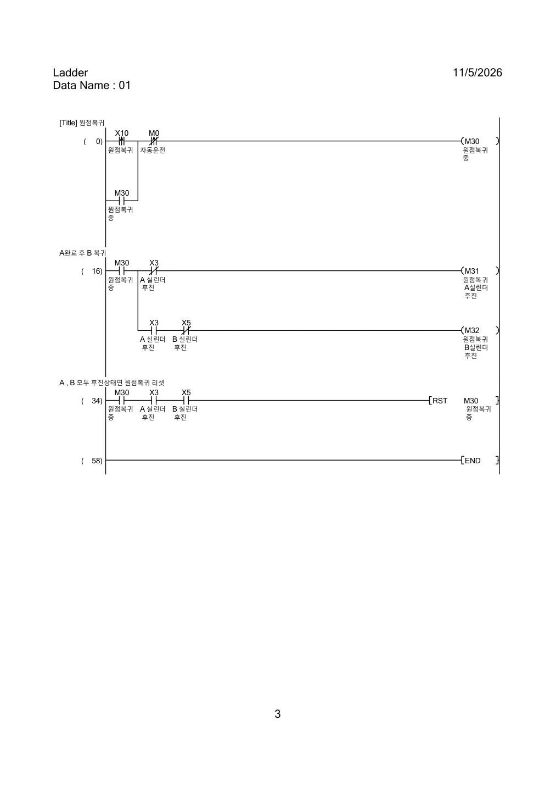
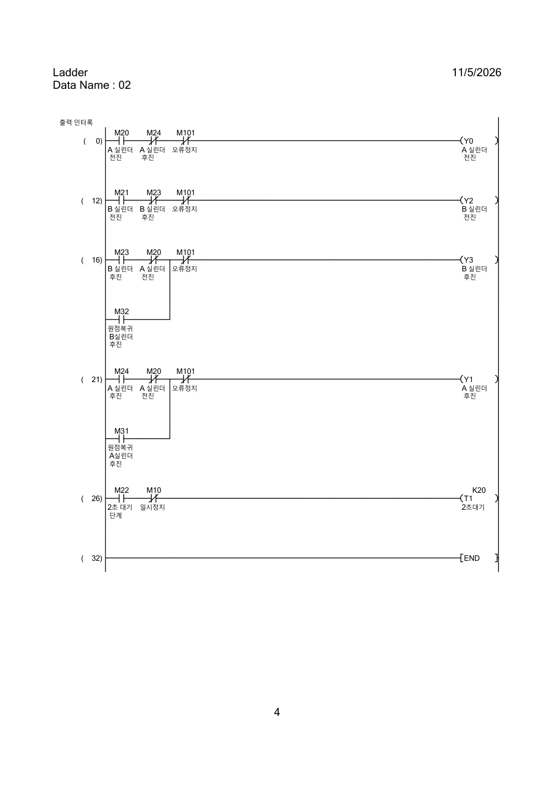
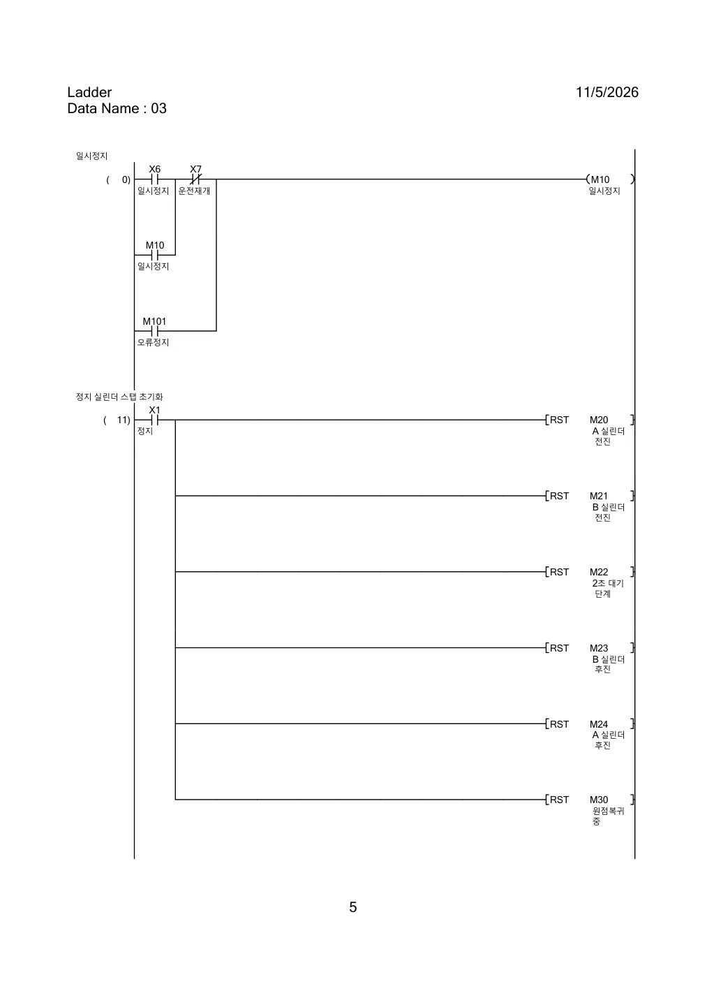
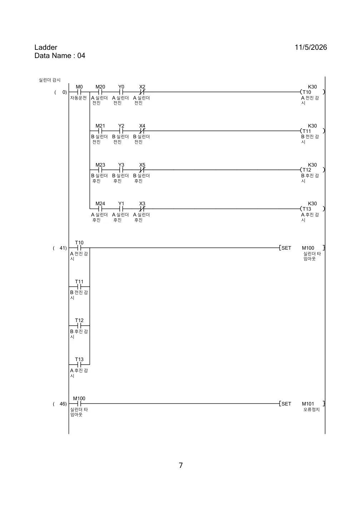
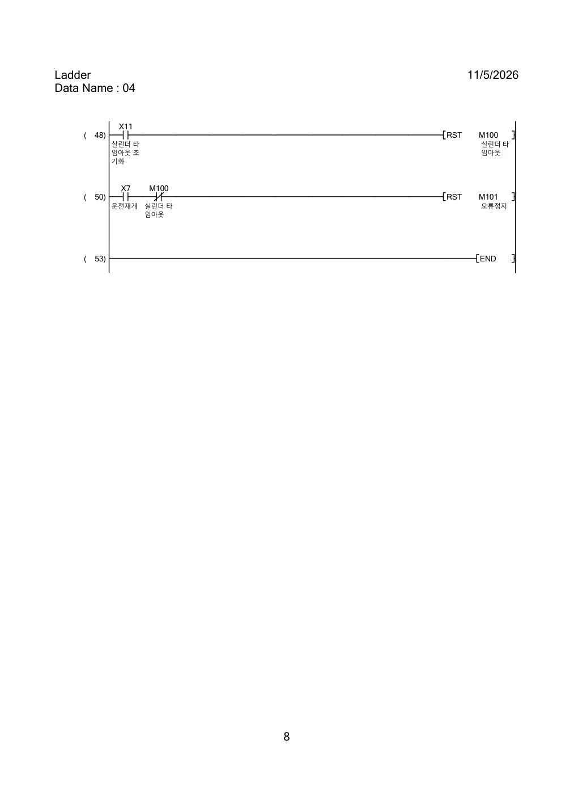

2축 양솔레노이드 실린더
시퀀스 제어 개인학습
MELSEC Q Series PLC의 순차제어를 직접 학습하고, GX Simulator2와 MX Component V5를 통해 Python 2D 실린더 시뮬레이터를 연동한 학습 사례입니다. 자동운전, 원점복귀, 일시정지, 실린더 이동 타임아웃 및 오류 복구를 구현했습니다.
학습 내용
01 / 순차제어
A 전진 → B 전진 → 2초 대기 → B 후진 → A 후진. SET/RST 스텝 전환과 완료 센서 조건을 적용했습니다.
02 / 인터록 및 복귀
전진·후진 출력 조건을 분리하고, 자동운전 외 원점복귀와 일시정지·운전재개를 구성했습니다.
03 / 타임아웃 및 복구
동작 스텝·실제 출력·미도달 센서를 조합한 3초 감시와 오류정지 후 재개 기능을 구현했습니다.
자동운전 시퀀스
A·B 모두 후진 완료(X3, X5) 상태에서 시작하며, 각 스텝의 완료 센서가 다음 단계로의 전환 조건이 됩니다.
디바이스 구성
| 분류 | 디바이스 | 기능 |
|---|---|---|
| 입력 | X0 / X1 | 자동운전 시작 / 정지 |
| 센서 | X2 / X3 | A 전진 완료 / A 후진 완료 |
| 센서 | X4 / X5 | B 전진 완료 / B 후진 완료 |
| 입력 | X6 / X7 | 일시정지 / 운전재개 |
| 입력 | X10 / X11 | 원점복귀 / 타임아웃 알람 초기화 |
| 출력 | Y0 / Y1 | A 전진 / A 후진 |
| 출력 | Y2 / Y3 | B 전진 / B 후진 |
| 상태 | M0 / M10 | 자동운전 / 일시정지 |
| 스텝 | M20~M24 | 전진·대기·후진 순차 동작 |
| 원점복귀 | M30~M32 | 원점복귀 진행 및 축별 후진 |
| 알람 | M100 / M101 | 타임아웃 알람 / 오류정지 |
| 타이머 | T1 / T10~T13 | 2초 대기 / 각 방향 3초 이동 감시 |
PLC 원본 레더
GX Works2에서 작성한 원본 레더 이미지를 기능별로 분류했습니다. 메뉴를 선택하면 해당 회로를 확인할 수 있습니다.
원점복귀

출력 인터록 및 2초 대기

일시정지 및 정지

실린더 타임아웃 감시 및 오류 복구


실린더 시뮬레이션
실제 Python 시뮬레이터의 화면 구성을 참고한 브라우저용 학습 모형입니다. 실제 PLC·GX Simulator2와는 연결되지 않습니다.
PLC 디바이스 상태 확인
웹 체험은 독립 JavaScript 모형이며 Python·MX Component 통신을 재현하지 않습니다.
실린더 감시 및 오류 복구
| 타이머 | 감시 조건 | 완료 판정 |
|---|---|---|
| T10 | M0 · M20 · Y0 · /X2 | A 전진 완료 |
| T11 | M0 · M21 · Y2 · /X4 | B 전진 완료 |
| T12 | M0 · M23 · Y3 · /X5 | B 후진 완료 |
| T13 | M0 · M24 · Y1 · /X3 | A 후진 완료 |
각 감시 타이머는 K30(100ms 기준 3초)이며, 타임아웃 발생 시 M100 알람과 M101 오류정지를 설정합니다. 오류 해제와 운전재개는 별도 입력으로 처리합니다.
학습 환경 및 구현 방식
PLC 레더는 GX Works2에서 구성하고 GX Simulator2로 동작을 확인했습니다. Python(PySide6)으로 A/B 실린더 위치를 2D로 표현하고, MX Component V5를 이용해 PLC 출력 Y0~Y3를 읽고 완료 센서 X2~X5를 기록하도록 연동했습니다.
Python 시뮬레이터 제작 과정에서는 ChatGPT의 코드 작성 및 디버깅 도움을 활용했습니다. PLC 시퀀스와 감시 조건을 분석하고 실습하며 동작을 확인한 개인학습입니다.
원본 GX Works2 레더 PDF 및 Python 소스는 별도 자료로 보관하며, 이 웹페이지는 핵심 로직과 교육용 체험을 요약합니다.